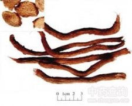

千年健

拼音
Qiān Nián Jiàn
别名
一包针、千颗针、千年见、丝棱线
来源
本品为天南星科平丝芋属植物千年健Homalomena occulta （Lour.）Schott的干燥根茎。春、秋二季采挖，洗净，除去外皮，晒干。
生境分布
生于林中水沟附近的阴湿地。分布广西、云南。产广西南部。
药材特点
多年生草本。根茎肉质，绿色，细长，直径1～2厘米，粗糙。叶互生；具长柄，柄长18～25厘米，肉质，绿色，平滑无毛，基部扩大成淡黄色叶鞘，包着根茎，叶鞘长约3～5厘米，脱落或宿存；叶片卵状箭形，长11～15厘米，宽7～11厘米，先端渐尖，基部箭形而圆，开展，全缘，表面绿色，背面淡绿色，两面平滑无毛，侧脉平行向上斜升，干后呈有规则的皱缩。花为肉穗花序；佛焰苞管部宿存，片部脱落；花单性，无花被。果实为浆果。花期3～4月。
性状
本品呈圆柱形，稍弯曲，有的略扁，长15～40cm，直径0。8～1。5cm。表面黄棕色至红棕色，粗糙，可见多数扭曲的纵沟纹、圆形根痕及黄色针状纤维束。质硬而脆，断面红褐色，黄色针状纤维束多而明显，相对另一断面呈多数针眼状小孔及有少数黄色针状纤维束，可见深褐色具光泽的油点。气香，味辛、微苦。
性味
苦，辛，温。
功能主治
祛风湿，健筋骨，活血止痛。用于风寒湿痹，腰膝冷痛，下肢拘挛麻木。
用法用量
4.5～9g。
化学成分
含挥发油，其中有α- 蒎烯、β- 蒎烯、芳樟醇等。
药理作用
1：抑菌作用用滤纸片平板法试验表明千年健挥发油具有显着抑制布氏杆菌（牛544：羊16、猪1330型）在平板上生长
摘录
《中国药典》